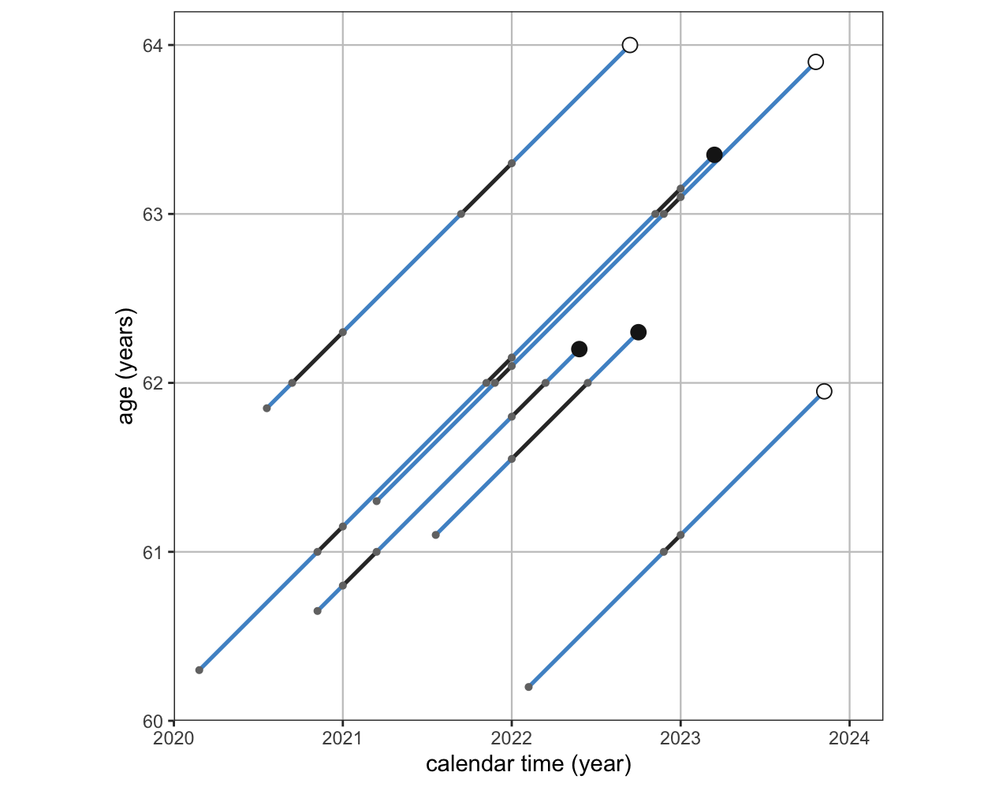
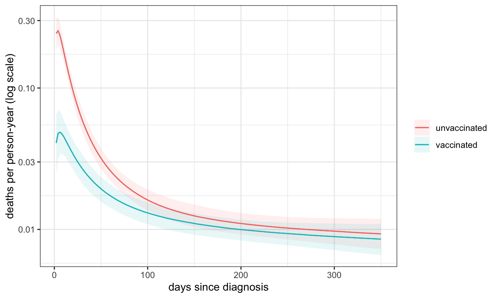
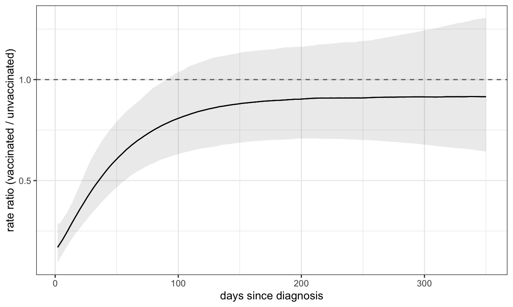
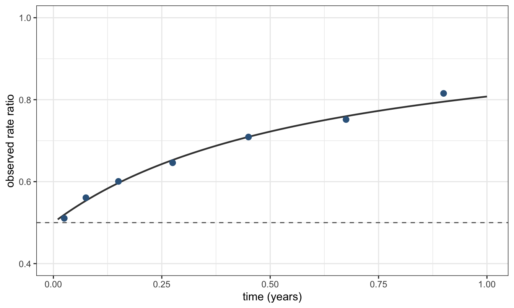
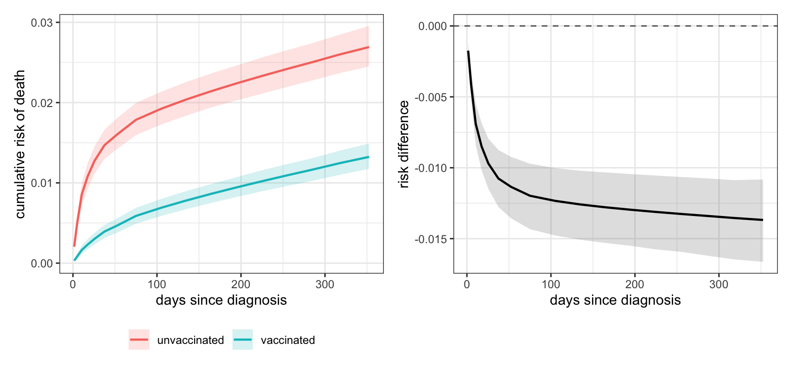

The previous chapter ended its treatment of counts by pointing at a construction it did not carry out. Where the rate at which events occur varies over follow-up, the remedy is to split each person’s follow-up into intervals, give each interval its own log person-time offset and its own baseline, and fit the result as a Poisson model. This is the subject of this chapter.
The setting is a cohort followed over time from an origin until an event occurs or observation stops. Three features distinguish it from regression analysis we looked at so far. Firstly, follow-up time differs between people, so a count of events is not comparable across them. Secondly, as most people are still alive when the study ends, their observation is censored, which means that their event time must exceed the time they were observed for. And thirdly, the quantity of interest may change over follow-up: a treatment can be strongly protective in the first fortnight and do nothing by month nine, and a single number covering the whole period reports neither.
The chapter has one further purpose. Survival analysis is the part of applied statistics with the widest gap between what its standard output means and what its readers take it to mean. A hazard ratio is not a risk ratio, it is not a probability of anything, and — the point that takes the most work to establish — it is not generally a causal contrast even in a randomised trial. Setting the problem up as a model of rates in person-time rather than as a Cox regression makes each of these visible, and gives a route to the quantities that are causal contrasts.
26.1 The cohort
The data are a synthetic register cohort of people diagnosed with COVID-19, followed from diagnosis for up to a year, with death from any cause as the outcome and vaccination status recorded at diagnosis.
d <-read_csv("data/death_synth.csv", show_col_types =FALSE) |>filter(time >0) |>mutate(vac =factor(vac, 0:1, c("unvaccinated", "vaccinated")),sex =factor(sex),education =factor(education),comorb =factor(pmin(heart + lung + diabetes, 2), 0:2,c("none", "one", "two or more")) )d |>group_by(vac) |>summarise(people =n(), deaths =sum(status), `crude 1-year risk`=mean(status)) |>kbl(digits =4, caption ="The cohort. `time` is days from diagnosis; `status` is 1 for death and 0 for a person still under observation when follow-up ended.") |>kable_styling(full_width =FALSE)
The cohort. `time` is days from diagnosis; `status` is 1 for death and 0 for a person still under observation when follow-up ended.
vac
people
deaths
crude 1-year risk
unvaccinated
15355
381
0.0248
vaccinated
18237
246
0.0135
Thirty-four records with a follow-up time of zero or less were dropped; they carry no person-time and therefore no information about a rate. Dropping them is a stated rule, which is the standard this book asks of every exclusion.
26.2 A risk in a window, and what it hides
The previous chapter’s tool for a binary outcome applies here without modification. Ignore the timing, treat the year as one window, and fit the modified-Poisson working model for a risk ratio.
m_window <-brm(status ~ vac, family =poisson(), data = d,prior =prior(normal(0, 1), class ="b"),chains =4, iter =2000, seed =1, refresh =0,file ="models/surv_window", file_refit ="on_change")avg_comparisons(m_window, variables ="vac", comparison ="ratio")
This is a defensible answer to a well-posed question: over a year of follow-up, the vaccinated arm’s risk of death is a little over half the unvaccinated arm’s. What it cannot report is when. The counts by follow-up window make the omission concrete.
Show code
d |>mutate(window =cut(time, c(0, 30, 90, 180, 365, Inf),labels =c("0-30 d", "30-90 d", "90-180 d","180-365 d", "> 365 d"))) |>filter(status ==1) |>count(window, vac) |>pivot_wider(names_from = vac, values_from = n, values_fill =0) |>kbl(caption ="Deaths by window of follow-up. The two arms are of similar size (15,355 and 18,237), so these counts are roughly comparable, and the pattern in them is not a constant ratio.") |>kable_styling(full_width =FALSE)
Deaths by window of follow-up. The two arms are of similar size (15,355 and 18,237), so these counts are roughly comparable, and the pattern in them is not a constant ratio.
window
unvaccinated
vaccinated
0-30 d
184
63
30-90 d
73
54
90-180 d
48
40
180-365 d
76
88
> 365 d
0
1
In the first month the unvaccinated arm records nearly three times as many deaths; in the last stretch of follow-up it records fewer. One number for the year averages over this, and the average is dominated by whichever period contributed the most events — which is a property of the study’s follow-up schedule, not of the treatment. The rest of the chapter is about modelling the timing rather than averaging it away.
26.3 Person-time, and the rate
The object that handles unequal and censored follow-up is the rate: events divided by the person-time in which they could have occurred. If \(D\) events occur while a group accumulates \(Y\) units of person-time, the rate is \(D / Y\), with units of inverse time.
A rate is not a probability. It is not confined to \([0, 1]\), it has units, and a rate of 2 deaths per person-year is a perfectly ordinary quantity meaning that a person under observation for six months has an expected 1 death. What connects it to a probability is an integral, taken up in a later section.
The bookkeeping device for person-time is the Lexis diagram: calendar time on one axis, age on the other, and each person a lifeline at 45 degrees, since a person ages one year per calendar year. A grid of age bands and calendar periods cuts the lifelines into segments, and each segment contributes its length as person-time to the cell it passes through.1

Figure 26.1: A Lexis diagram. Each diagonal is one person’s lifeline, running at 45 degrees because a person ages one year per calendar year; the filled dot marks a death and the open circle a person still under observation when follow-up ended. The grid of one-year age bands and one-year calendar periods cuts each lifeline into segments, drawn here in alternating shades, and the length of a segment is the person-time that person contributes to that cell. The lifelines are invented for the illustration: the cohort used in this chapter is followed on a single time scale, time since diagnosis, and carries no calendar-time variable.
This cohort is followed on one time scale only — time since diagnosis — so the grid is a set of cut points along follow-up. The Epi package builds the object and popEpi splits it.
NOTE: entry.status has been set to 0 for all.
NOTE: entry is assumed to be 0 on the fu timescale.
spl <-splitMulti(L, fu = BRK)sL <-as_tibble(spl) |>mutate(t =timeBand(spl, "fu", "middle"),agemid =seq(35, 90, by =5)[as.integer(cut(age, seq(35, 90, by =5),right =FALSE))] +2.5)c(people =nrow(d), person_interval_rows =nrow(sL))
people person_interval_rows
33592 562858
The cut points are closer together early, where the rate changes fastest. Each of the 33,592 people has become several rows, one per interval they survive into, and 562,858 rows is more than a Bayesian sampler wants to see. The rows are highly redundant, though: two people of the same sex, education, comorbidity count and age band contribute indistinguishable information to the same interval. Adding their events and their person-time loses nothing.
562,858 rows become 6,594, with every event and every person-year preserved.
Why splitting rows is not cheating
Splitting one person into twelve rows looks like manufacturing data, and the count of rows in a regression usually governs how much the data are taken to say. Here it does not, because the split rows are not independent observations. They are a factorisation of one likelihood. If a person’s hazard is taken as constant within each interval, their contribution to the likelihood is a product over the intervals they pass through, one factor per interval, and each factor has the form of a Poisson likelihood for the event indicator with the interval’s person-time as an offset. Multiplying those factors reconstructs the person’s exponential survival contribution exactly. The likelihood is the same object written differently, so splitting adds no information: it relaxes an assumption, by letting the baseline hazard differ between intervals instead of holding it constant over the whole of follow-up.2
The same argument licenses the aggregation. Summing events and person-time over rows that share a covariate pattern and an interval changes the likelihood only by a factor that does not involve the parameters, so every estimate is unchanged — as the next section checks numerically.
What splitting finer does cost is precision per row and, eventually, sparsity: with intervals fine enough, most cells contain no events. The baseline is then better estimated by a smooth function of time than by a free parameter per interval, which is what this chapter does.
26.4 The Poisson survival model
With person-time in hand the model is the one from the previous chapter. The outcome is the number of events in a cell, the offset is the log of the cell’s person-time, and the linear predictor models the log rate:
with \(D_i\) the events and \(Y_i\) the person-time in cell \(i\). Under a log link the coefficient on a binary exposure is a log rate ratio.
Three implementations give the identical answer, which is the check that the aggregation and the offset are doing what the previous section claimed.
r_split <-glm(cbind(lex.Xst ==1, lex.dur) ~ vac +factor(t),family ="poisreg", data = sL)r_cells <-glm(events ~ vac +factor(t) +offset(log(pyears)),family =poisson(), data = cells_crude)tibble(route =c("Epi::poisreg, one row per person-interval","glm + offset(log(person-years)), aggregated cells"),rows =c(nrow(sL), nrow(cells_crude)),`log rate ratio`=c(coef(r_split)["vacvaccinated"], coef(r_cells)["vacvaccinated"])) |>kbl(digits =5, caption ="The same model by two routes. `Epi`'s `poisreg` family is a reparameterisation that carries person-time on the left-hand side rather than in an offset; the likelihood is the ordinary Poisson one.") |>kable_styling(full_width =FALSE)
The same model by two routes. `Epi`'s `poisreg` family is a reparameterisation that carries person-time on the left-hand side rather than in an offset; the likelihood is the ordinary Poisson one.
route
rows
log rate ratio
Epi::poisreg, one row per person-interval
562858
-0.61788
glm + offset(log(person-years)), aggregated cells
34
-0.61788
Poisson survival analysis in brms
A piecewise-exponential survival model is the stock poisson() family with a log person-time offset, which is written in brms as
brm(events ~ vac +s(t) +offset(log(pyears)), family =poisson(), data = cells)
Two practical points. First, aggregate before fitting: the same model on 562,858 person-interval rows and on 6,594 cells has the same posterior, and only one of the two finishes. Second, mgcv smooths carry over unchanged, so s(t, by = vac) means in brms what it means in gam(), and a spline specification developed with mgcv transfers without restructuring.
brms also provides family = cox(), which fits a proportional-hazards model with the baseline hazard expanded in M-splines. It works, and it agrees with survival::coxph on these data. The argument of the next-but-one callout is not that a Cox model cannot be fitted Bayesianly, but that it answers a narrower question than the Poisson formulation.
26.5 The baseline hazard is something you model
The rate at which people die varies enormously over follow-up here, and that variation shows the shape of the epidemic in this cohort. A spline in follow-up time models it.
pr <-c(prior(normal(-4, 2), class ="Intercept"),prior(normal(0, 1), class ="b"),prior(student_t(3, 0, 1), class ="sds"))m_const <-brm(events ~ vac +s(log(t), k =5) +offset(log(pyears)),family =poisson(), data = cells_crude, prior = pr,chains =4, iter =2000, seed =2, refresh =0,control =list(adapt_delta =0.999, max_treedepth =12),file ="models/surv_const", file_refit ="on_change")m_time <-brm(events ~ vac +s(log(t), by = vac, k =5) +offset(log(pyears)),family =poisson(), data = cells_crude, prior = pr,chains =4, iter =2000, seed =2, refresh =0,control =list(adapt_delta =0.995, max_treedepth =12),file ="models/surv_time", file_refit ="on_change")
The intercept prior deserves a mention. The intercept is a log rate in deaths per person-year. A cohort like this one might plausibly run anywhere from 1 death per 1000 person-years to 200, that is from \(\log(0.001) = -6.9\) to \(\log(0.2) = -1.6\); normal(-4, 2) covers that range comfortably and rules out the physically absurd. A prior set without converting to the rate scale first is not a weak prior, it is an unexamined one.
The two models differ in one very important term:
vac + s(t) — the baseline rate is free to take any smooth shape over follow-up, and vaccination multiplies it by a constant. This is the proportional-hazards assumption, written explicitly.
vac + s(t, by = vac) — each arm gets its own smooth curve over follow-up, so the ratio between them is free to change. The vac term outside the smooth carries the overall level; the by = argument inside it stratifies the shape.
Two further forms that appear later:
vac + s(t, by = vac) + s(age) — the age effect is a free curve, but it is additive with respect to follow-up time: age shifts the log rate by the same amount at every point in follow-up.
vac + t2(log(t), agemid, by = vac) — follow-up time and age are modelled jointly as a surface, one per arm, so the shape of the follow-up curve may itself differ by age. This is the most flexible of the four, and the one most in need of data.
The last of those is written with t2() rather than s(), and the reason is not cosmetic. Passing two covariates into one s() builds an isotropic thin-plate smooth: a single smoothing parameter governs wiggliness in both directions at once, which amounts to asserting that a step of one unit in the first covariate and one unit in the second are the same size. That is reasonable for latitude and longitude. It is not reasonable for log follow-up time, which spans about 5.5 units here, and age in years, which spans 50 — and because the assertion is about units, the fit changes if age is re-expressed in decades. A tensor product smooth gives each direction its own marginal basis and its own smoothing parameter, and is invariant to rescaling either covariate.
cells_dec <- cells |>mutate(age_dec = agemid /10) # same variable, different unitsiso_yr <-gam(events ~ vac +s(log(t), agemid) +offset(log(pyears)),family =poisson(), data = cells)iso_dec <-gam(events ~ vac +s(log(t), age_dec) +offset(log(pyears)),family =poisson(), data = cells_dec)ten_yr <-gam(events ~ vac +t2(log(t), agemid) +offset(log(pyears)),family =poisson(), data = cells)ten_dec <-gam(events ~ vac +t2(log(t), age_dec) +offset(log(pyears)),family =poisson(), data = cells_dec)tibble(smooth =c("s(log(t), age)", "s(log(t), age)", "t2(log(t), age)", "t2(log(t), age)"),`age measured in`=c("years", "decades", "years", "decades"),`effective df`=c(sum(iso_yr$edf), sum(iso_dec$edf), sum(ten_yr$edf), sum(ten_dec$edf)),`log rate ratio`=c(coef(iso_yr)["vacvaccinated"], coef(iso_dec)["vacvaccinated"],coef(ten_yr)["vacvaccinated"], coef(ten_dec)["vacvaccinated"])) |>kbl(digits =c(0, 0, 2, 5),caption ="The same model twice over, changing only the units in which age is expressed. The isotropic smooth gives a different answer; the tensor product gives the identical one.") |>kable_styling(full_width =FALSE)
The same model twice over, changing only the units in which age is expressed. The isotropic smooth gives a different answer; the tensor product gives the identical one.
smooth
age measured in
effective df
log rate ratio
s(log(t), age)
years
17.63
-0.77760
s(log(t), age)
decades
15.49
-0.77171
t2(log(t), age)
years
11.80
-0.77045
t2(log(t), age)
decades
11.80
-0.77045
A practical constraint decides which tensor product to use. brms implements s() and t2(); mgcv’s te() and ti() are not available, because they lack the random-effects representation brms builds its Stan code from — attempting one returns an error recommending t2(). Everything the appendix says about te() therefore has to be done with t2() in a brms fit. The mgcv appendix covers the constructions, the choice of marginal bases, and the ANOVA-style decomposition in full.
Two choices remain: the variable the smooth is built on, and how much flexibility it is allowed. Both matter here more than they usually do, because the rate falls by an order of magnitude in the first month and then changes slowly for the rest of the year. A smooth in \(t\) spends its flexibility uniformly across the year, which is to say mostly where nothing is happening, while a smooth in \(\log t\) spends it where the data are dense and the curve is steep. The comparison is worth making explicitly rather than by assertion.
m_lin <-brm(events ~ vac +s(t, by = vac, k =8) +offset(log(pyears)),family =poisson(), data = cells_crude, prior = pr,chains =4, iter =2000, seed =2, refresh =0,control =list(adapt_delta =0.995, max_treedepth =12),file ="models/surv_time_linbasis", file_refit ="on_change")loo_compare(loo(m_time), loo(m_lin))
elpd_diff se_diff
m_time 0.0 0.0
m_lin -16.2 6.2
The smooth in \(\log t\) is preferred, and the reason is visible in what the other model does with its spare flexibility: fitted on the raw time scale with eight basis functions, it puts a peak in the rate ratio at around day 310 that rests on 83 deaths spread across the last three months, and then turns sharply down at the boundary. Neither feature survives regularisation on the \(\log t\) scale. The model selected here is the smoother one, and the figures below use it.
The Cox model, and why it appears in this chapter
The Cox proportional-hazards model writes the hazard for a person with covariates \(x\) as \(h(t \mid x) = h_0(t)\exp(x'\beta)\) and estimates \(\beta\) by a partial likelihood that conditions on the observed event times, in which the unspecified baseline \(h_0(t)\) cancels. It was a major result: it delivered a covariate-adjusted estimate without requiring any commitment about the shape of the baseline hazard, and it did so with an amount of arithmetic that was feasible in 1972.
Its costs follow from the same construction.
The baseline is not estimated, so the model yields no absolute risk. A risk requires the baseline back, through a separate Breslow-type step that is usually skipped, which is why so many survival papers report a hazard ratio and no risks at all.
Proportionality is assumed rather than examined. Everything about how the effect changes over follow-up has been assumed away before estimation begins, and a test for proportional hazards is a poor substitute for modelling the variation.3
The coefficient is a within-risk-set contrast, comparing people who have survived to each event time. The section after next is about what that implies.
The piecewise-exponential Poisson model gives the same rate ratio when proportionality holds, and it also gives the baseline, priors, a posterior, and a route to absolute risks. That is the reason to teach it in preference, and the reason the Cox model appears here chiefly as the thing being replaced. It is still worth recognising: it remains the most common model in the applied literature, and reading that literature requires knowing what its output is and is not.
26.6 Rates over time, and the rate ratio over time
With m_time fitted, the two arms’ rates are predictions and their ratio is a contrast, obtained with marginaleffects as everywhere else in this book. The offset is set to one person-year so that a prediction is a rate.
Show code
nd_t <-expand_grid(t =seq(2, 350, by =2),vac =factor(levels(d$vac), levels =levels(d$vac))) |>mutate(pyears =1)plot_predictions(m_time, newdata = nd_t, by =c("t", "vac")) +scale_y_log10() +labs(x ="days since diagnosis", y ="deaths per person-year (log scale)",colour =NULL, fill =NULL) +theme_bw()

Figure 26.2: Fitted mortality rate by arm over follow-up, on a log scale. The rate falls by more than an order of magnitude over the year in both arms; the vertical gap between the curves is the log rate ratio, and it narrows.
Show code
plot_comparisons(m_time, variables ="vac", by ="t",newdata = nd_t, comparison ="ratio") +geom_hline(yintercept =1, linetype =2, colour ="grey40") +labs(x ="days since diagnosis", y ="rate ratio (vaccinated / unvaccinated)") +theme_bw()

Figure 26.3: The rate ratio, vaccinated versus unvaccinated, as a function of time since diagnosis, with a 95% credible band. The dashed line is the null. The ratio starts near 0.17 and rises across follow-up to around 0.9, with a band that includes the null over the second half of the year. Whether it actually crosses the null is not resolved by these data.
The crude tabulation behind those curves is worth seeing directly, because the model is only smoothing it:
Show code
band_tab <- sL |>mutate(band =cut(t, c(0, 14, 30, 60, 90, 180, 270, 370),labels =c("0-14", "14-30", "30-60", "60-90","90-180", "180-270", "270-370"))) |>group_by(band, vac) |>summarise(ev =sum(lex.Xst ==1), py =sum(lex.dur) /365.25, .groups ="drop") |>mutate(rate =1000* ev / py) |>select(band, vac, ev, rate) |>pivot_wider(names_from = vac, values_from =c(ev, rate)) |>mutate(`rate ratio`= rate_vaccinated / rate_unvaccinated)band_tab |>kbl(digits =c(0, 0, 0, 1, 1, 3),col.names =c("days since diagnosis", "deaths, unvax", "deaths, vax","rate/1000 py, unvax", "rate/1000 py, vax", "rate ratio"),caption ="Rates and rate ratios by band of follow-up, computed directly from events and person-time with no model. The rate falls by a factor of 24 in the unvaccinated arm across the year, and the rate ratio rises from 0.23 to above 1. The last band rests on 83 deaths, which is why the fitted curve in the previous figure does not follow it up past the null.") |>kable_styling(full_width =FALSE)
Rates and rate ratios by band of follow-up, computed directly from events and person-time with no model. The rate falls by a factor of 24 in the unvaccinated arm across the year, and the rate ratio rises from 0.23 to above 1. The last band rests on 83 deaths, which is why the fitted curve in the previous figure does not follow it up past the null.
days since diagnosis
deaths, unvax
deaths, vax
rate/1000 py, unvax
rate/1000 py, vax
rate ratio
0-14
124
34
211.8
48.7
0.230
14-30
60
29
90.3
36.4
0.404
30-60
43
29
34.7
19.5
0.562
60-90
30
25
24.3
16.8
0.694
90-180
48
40
13.0
9.0
0.693
180-270
42
40
11.4
9.0
0.793
270-370
34
49
8.9
10.7
1.204
26.7 A drifting rate ratio needs an explanation, not a caveat
The rate ratio travels from about 0.17 in the first days to about 0.9 by the end of the year — the crude table reaches 1.20 in its last band, and the fitted curve declines to follow it that far. Either way, most of a large protective effect has disappeared over the course of follow-up. The temptation is to read this straight off as waning protection. The temptation to resist it, and to attach a general warning about hazard ratios instead, is almost as strong. Both are shortcuts. There are three mechanisms that produce a drifting rate ratio, and they can be told apart.
26.7.1 Mechanism 1: the risk sets stop being comparable
A rate at time \(t\) is computed among those still alive at \(t\). If one arm has been dying faster, the two arms’ survivors are no longer the same kind of people by the time the later intervals are reached: the arm with the higher early rate has lost a larger share of its frailest members, so its survivors are on average more robust than the other arm’s. Comparing the arms at \(t\) therefore conditions on survival to \(t\), which is a collider — it is caused by treatment and by whatever unmeasured characteristics make a person likely to die.4 The result is a rate ratio that drifts toward the null with no change whatever in any individual’s risk.
This is not a vague worry, and it has a closed form. Suppose every person carries an unobserved frailty \(Z\), with \(Z \sim \text{Gamma}(k, k)\) so that \(\mathbb{E}[Z] = 1\) and \(\text{Var}(Z) = 1/k\), and suppose treatment multiplies each individual’s hazard by a constant \(r\) at all times. The marginal rate in each arm is the individual rate averaged over the survivors, and for the gamma the average is available in closed form, giving an observed rate ratio
where \(H_0(t)\) is the cumulative baseline hazard accrued by time \(t\). Two consequences follow immediately, and both are useful.
rr_obs <-function(r, H0, k) r * (1+ H0 / k) / (1+ r * H0 / k)set.seed(4)n_f <-400000fvar <-2# frailty varianceh0 <-1.6# baseline hazard per year: a high-mortality cohortr_true <-0.5# every individual's effect, constant in timeA <-rep(0:1, each = n_f /2)Z <-rgamma(n_f, shape =1/ fvar, rate =1/ fvar)Tf <-rexp(n_f, rate = Z * h0 * r_true^A)brk_f <-c(0, .05, .1, .2, .35, .55, .8, 1)frail <-map_dfr(seq_len(length(brk_f) -1), function(i) { lo <- brk_f[i]; hi <- brk_f[i +1] rate <-map_dbl(0:1, function(a) { s <- Tf[A == a]sum(s > lo & s <= hi) /sum(pmin(pmax(s - lo, 0), hi - lo)) })tibble(mid = (lo + hi) /2, observed = rate[2] / rate[1])})

Figure 26.4: A simulation in which every individual’s rate ratio is 0.5 at every moment. Unobserved gamma frailty with variance 2, in a cohort where about half the control arm dies within the period, is enough to make the observed rate ratio drift to above 0.8. The solid line is the closed form; the points are the simulated interval rate ratios; the dashed line is the constant truth.
First, the drift approaches 1 from below: as \(H_0(t)\) grows without bound the expression tends to 1, and for \(r < 1\) it is increasing and always less than 1. Under this mechanism the observed rate ratio for a protective treatment can be pulled toward the null but cannot be pushed past it. A rate ratio that crosses the null is not explained by frailty selection.
Second, the size of the drift is governed by the cumulative hazard accrued, which is to say by how much of the cohort has died. This makes the mechanism quantifiable rather than merely nameable.
Show code
tibble(`cumulative risk in the control arm`=rep(c(0.025, 0.20, 0.50, 0.80), each =3),`frailty variance`=rep(c(1, 2, 5), times =4)) |>mutate(`observed rate ratio`=rr_obs(0.5, -log(1-`cumulative risk in the control arm`),1/`frailty variance`),`% of the true effect erased`=100* (`observed rate ratio`-0.5) / (1-0.5)) |>kbl(digits =c(3, 0, 3, 1),caption ="How much of a true rate ratio of 0.5 is erased by unmeasured frailty, as a function of how much of the control arm has died and how variable the frailty is. The mechanism needs a high event rate to matter.") |>kable_styling(full_width =FALSE)
How much of a true rate ratio of 0.5 is erased by unmeasured frailty, as a function of how much of the control arm has died and how variable the frailty is. The mechanism needs a high event rate to matter.
cumulative risk in the control arm
frailty variance
observed rate ratio
% of the true effect erased
0.025
1
0.506
1.3
0.025
2
0.512
2.5
0.025
5
0.530
6.0
0.200
1
0.550
10.0
0.200
2
0.591
18.2
0.200
5
0.679
35.8
0.500
1
0.629
25.7
0.500
2
0.705
40.9
0.500
5
0.817
63.4
0.800
1
0.723
44.6
0.800
2
0.808
61.7
0.800
5
0.900
80.1
The first block of that table is this cohort. About 2.5% of the unvaccinated arm dies within the year, and at that cumulative risk unmeasured frailty erases between 1% and 6% of a true effect even when the frailty variance is implausibly large. The observed drift, from about 0.17 to about 0.9, erases roughly 90% of the effect. Depletion of susceptibles can account for at most a fifteenth of what has to be explained, and it cannot push the ratio past the null at all. The drift in these data is not depletion of susceptibles.
That conclusion is specific to this setting and does not generalise. The mechanism is a serious source of bias in vaccine-effectiveness studies of infection during a high-attack-rate period, where a large fraction of the susceptible pool is consumed within the study window.5 Here the cohort consists of people already infected, followed for death, and the cumulative risk is small. The mechanism transfers; the magnitude does not. Citing the general result without computing the bound would have got the wrong answer.
26.7.2 Mechanism 2: confounding, which does not go away with time
The second candidate is ordinary confounding. Who was vaccinated was not decided at random, and in this cohort the vaccinated arm is slightly older and somewhat more comorbid. Early in follow-up, deaths are dominated by the acute illness and a large protective effect swamps that imbalance; late in follow-up, when the acute phase has passed and the remaining deaths are largely background mortality, there is no large effect left to swamp it.
m_adj <-brm(events ~ vac +s(log(t), by = vac, k =5) +s(agemid, k =6) + sex + education + comorb +offset(log(pyears)),family =poisson(), data = cells, prior = pr,chains =4, iter =2000, seed =2, refresh =0,control =list(adapt_delta =0.995, max_treedepth =12),file ="models/surv_adj", file_refit ="on_change")
Figure 26.5: The rate ratio over follow-up, before and after adjustment for age, sex, education and comorbidity. Adjustment lowers the whole curve, by most in the later part of follow-up where the effect is smallest, but it does not remove the drift.
Adjustment shifts the curve down throughout, and the difference is largest where the effect is smallest. It accounts for part of the drift and not for the drift itself.
26.7.3 Mechanism 3: the effect really does change
What remains after the first two mechanisms have been bounded and adjusted for is a rate ratio that still rises across follow-up. In these simulated data that is what was built in, and in a real study it would be the substantive conclusion: protection against death is concentrated in the weeks after infection and is largely gone by the end of the year.
The general point is the procedure rather than the answer. A rate ratio that changes over follow-up is not self-interpreting, and the response to it is neither to read it off nor to disclaim it, but to work through the three mechanisms: bound the selection effect from the cumulative risk, adjust for measured confounders and see how much moves, and attribute the remainder to the effect only after the first two have been accounted for.
26.8 From rates to risks
Everything so far is a rate, and a rate is not what a person facing a decision wants to know. The quantity that answers the decision question is the cumulative risk: the probability of having died by time \(t\). The two are connected by an integral. If the rate at time \(u\) is \(h(u)\), then the cumulative hazard is \(H(t) = \int_0^t h(u)\,\mathrm{d}u\), the survival function is \(S(t) = \exp\{-H(t)\}\), and the risk is \(1 - S(t)\).
Under a piecewise-constant model this integral is a sum, which makes the computation direct: take each posterior draw, form the fitted rate in each interval for each covariate pattern, accumulate, and average the resulting survival curves over the covariate distribution of the cohort. That last step is standardisation, and it makes the result a marginal risk for the whole cohort under each treatment rather than a risk for one covariate profile.
mid <- (BRK[-1] + BRK[-length(BRK)]) /2width <-diff(BRK) /365.25# interval widths, in yearspatterns <- d |>mutate(agemid =seq(35, 90, by =5)[as.integer(cut(age, seq(35, 90, by =5),right =FALSE))] +2.5) |>count(sex, education, comorb, agemid, name ="w") |>mutate(w = w /sum(w))risk_curves <-function(model, arm, ndraws =1000) { nd <-expand_grid(patterns, t = mid) |>mutate(vac =factor(arm, levels =levels(d$vac)), pyears =1) lambda <-posterior_epred(model, newdata = nd, ndraws = ndraws) # draws x rows np <-nrow(patterns); ni <-length(mid)# rows of nd run pattern-major, interval-minor arr <-array(lambda, dim =c(nrow(lambda), ni, np)) H <-aperm(apply(arr, c(1, 3), function(v) cumsum(v * width)), c(2, 1, 3)) S <-exp(-H) # draws x interval x pattern1-apply(S, c(1, 2), function(s) sum(s * patterns$w)) # draws x interval}risk_unvax <-risk_curves(m_adj, "unvaccinated")risk_vax <-risk_curves(m_adj, "vaccinated")
Show code
summ <-function(m, label) {tibble(t = mid, arm = label,est =colMeans(m),lo =apply(m, 2, quantile, 0.025),hi =apply(m, 2, quantile, 0.975))}p_left <-bind_rows(summ(risk_unvax, "unvaccinated"), summ(risk_vax, "vaccinated")) |>ggplot(aes(t, est, colour = arm, fill = arm)) +geom_ribbon(aes(ymin = lo, ymax = hi), alpha =0.18, colour =NA) +geom_line(linewidth =0.8) +labs(x ="days since diagnosis", y ="cumulative risk of death",colour =NULL, fill =NULL) +theme_bw() +theme(legend.position ="bottom")p_right <-summ(risk_vax - risk_unvax, "difference") |>ggplot(aes(t, est)) +geom_hline(yintercept =0, linetype =2, colour ="grey40") +geom_ribbon(aes(ymin = lo, ymax = hi), alpha =0.18, fill ="grey30") +geom_line(linewidth =0.8) +labs(x ="days since diagnosis", y ="risk difference") +theme_bw()p_left + p_right

Figure 26.6: Standardised cumulative risk of death by time since diagnosis under each treatment, with 95% credible bands (left), and the risk difference between them (right). Both are averaged over the covariate distribution of the whole cohort, so each curve answers what the cohort’s risk would have been had everyone in it been treated one way.
Standardised one-year risks and their contrasts, with 95% credible intervals, from the adjusted model.
quantity
estimate
lower
upper
risk, unvaccinated
0.0269
0.0245
0.0295
risk, vaccinated
0.0132
0.0117
0.0149
risk difference
-0.0137
-0.0166
-0.0108
risk ratio
0.4929
0.4213
0.5725
These contrasts are the causal quantities. Each is a comparison of what would have happened to the same cohort under two treatments, formed by intervening on vac in the model and standardising over the covariate distribution — the g-computation of Chapter 12, now applied to a time-to-event outcome. Nothing in them is conditioned on survival, so the objection raised against the rate ratio does not apply to them.
Report both curves, because neither is sufficient
It is tempting to conclude from the previous section that the cumulative-risk curves should replace the rate plots. They should not, and the reason is a property of cumulation.
The cumulative risk at time \(t\) is a running total. Two treatments with entirely different temporal profiles — one that prevents deaths only in the first fortnight and one that prevents the same number of deaths evenly across the year — produce nearly the same curve at day 365. The cumulative curve reports how much, and compresses when to the point of invisibility. In this cohort, the whole substantive finding is that protection is concentrated in the first weeks, and it is legible in Figure 26.2 and Figure 26.3 and almost invisible in Figure 26.6.
The rate plot has the complementary defect. It shows when the rates differ, but it is a contrast among survivors and so is not a causal contrast, and it says nothing about how many deaths are at stake, because a large ratio applied to a small rate late in follow-up moves few people.
The two plots therefore answer different questions and neither substitutes for the other. The reporting standard this chapter recommends is both, with the distinction stated: the rate curves describe the timing of the effect, and the cumulative curves carry the causal contrast and the magnitude.
26.9 Competing events
The outcome above is death from any cause, and that is the one case where the machinery is simple: every person eventually gets the event, and censoring is only about when observation stops.
Most outcomes are not like that. Suppose the outcome of interest is a major adverse cardiac event, and a person dies of cancer. They have not been “censored”, in the sense of an event that is still out there and merely unobserved. They can never have the event. Death from another cause is a competing event: it removes the possibility of the outcome rather than the observation of it.
The person-time layout handles this without new machinery. The same split rows carry one event indicator per cause, and each cause gets its own Poisson model of its cause-specific hazard — the rate of that cause among those still at risk of everything. What changes is not the fitting but the route from rates to risks.
To see what goes wrong and what fixes it, the section uses a simulation whose answer is known by construction: a treatment that cuts the cause-specific hazard of the event of interest by 40% and leaves the competing hazard untouched.
The first thing to do wrong is to treat the competing event as censoring and run a Kaplan–Meier, reading one minus the survival curve as a risk. That estimator converges to \(1 - \exp\{-\int h_1\}\), which is the risk that would obtain if nobody could ever die of anything else — a quantity about a world in which the competing cause has been abolished, not the one the data come from.
km_cr <-survfit(Surv(Tobs, cause ==1) ~ A, data = cr)aj_cr <-survfit(Surv(Tobs, factor(cause, 0:2, c("censored", "event", "competing"))) ~ A,data = cr)tibble(arm =c("control", "treated"),`truth`= truth$`true risk at 5 y`,`1 - Kaplan-Meier`=1-summary(km_cr, times = TAU)$surv,`Aalen-Johansen`=summary(aj_cr, times = TAU)$pstate[, "event"]) |>kbl(digits =4, caption ="Risk of the event of interest by 5 years. Treating the competing event as censoring overstates the risk in both arms, and overstates the benefit of treatment: the true risk difference is -0.100 and the Kaplan-Meier difference is -0.134.") |>kable_styling(full_width =FALSE)
Risk of the event of interest by 5 years. Treating the competing event as censoring overstates the risk in both arms, and overstates the benefit of treatment: the true risk difference is -0.100 and the Kaplan-Meier difference is -0.134.
arm
truth
1 - Kaplan-Meier
Aalen-Johansen
control
0.2854
0.3934
0.2865
treated
0.1857
0.2592
0.1856
The correct construction needs both cause-specific hazards. A person can only have the event of interest at time \(u\) if they have survived everything up to \(u\), so the cumulative incidence is
in which the competing hazard \(h_2\) enters through \(S\). The rate of the event of interest alone does not determine its risk. This is the single most important structural fact about competing events.6
Fitted as two Poisson models and accumulated the same way as before:
brk_cr <-seq(0, TAU, by =0.25)mid_cr <- (brk_cr[-1] + brk_cr[-length(brk_cr)]) /2w_cr <-diff(brk_cr)cr_cells <- cr |>mutate(id =row_number()) |>expand_grid(k =seq_along(mid_cr)) |>mutate(lo = brk_cr[k], hi = brk_cr[k +1],pt =pmin(pmax(Tobs - lo, 0), hi - lo),e1 =as.integer(cause ==1& Tobs > lo & Tobs <= hi),e2 =as.integer(cause ==2& Tobs > lo & Tobs <= hi)) |>filter(pt >0) |>group_by(A, k) |>summarise(e1 =sum(e1), e2 =sum(e2), pt =sum(pt), .groups ="drop")m_cause1 <-glm(e1 ~ A *factor(k) +offset(log(pt)), family =poisson(), data = cr_cells)m_cause2 <-glm(e2 ~ A *factor(k) +offset(log(pt)), family =poisson(), data = cr_cells)cif_gcomp <-function(arm) { nd <-tibble(A =factor(arm, levels =levels(cr$A)), k =seq_along(mid_cr), pt =1) l1 <-predict(m_cause1, nd, type ="response") l2 <-predict(m_cause2, nd, type ="response") S_start <-c(1, exp(-cumsum((l1 + l2) * w_cr))[-length(l1)])# exact within an interval: the two causes compete at constant rates, and# cause 1 claims l1 / (l1 + l2) of everyone who fails in itcumsum(S_start * l1 / (l1 + l2) * (1-exp(-(l1 + l2) * w_cr)))}tibble(arm =c("control", "treated"),truth = truth$`true risk at 5 y`,`cause-specific Poisson + g-computation`=c(tail(cif_gcomp("control"), 1), tail(cif_gcomp("treated"), 1))) |>kbl(digits =4, caption ="Two cause-specific Poisson models, accumulated into a cumulative incidence, recover the truth.") |>kable_styling(full_width =FALSE)
Two cause-specific Poisson models, accumulated into a cumulative incidence, recover the truth.
arm
truth
cause-specific Poisson + g-computation
control
0.2854
0.2865
treated
0.1857
0.1856
Three ways to get competing events wrong
Treating the competing event as censoring. One minus a Kaplan–Meier curve, or any cumulative-incidence calculation that censors at the competing event, estimates the risk in a hypothetical world where the competing cause does not exist. It is biased upward as an estimate of the risk in the actual world, and the bias grows with the competing rate.
Reading a cause-specific hazard ratio as an effect on risk. For all-cause mortality the rate determines the risk, so a model of the rate implies a statement about the risk. With competing events that correspondence is broken: the risk depends on both hazards, so a treatment can lower the cause-specific hazard of the event of interest and raise its cumulative incidence, if it lowers the competing hazard enough to leave more people alive to have it.
Reading a subdistribution hazard ratio as a causal effect. The Fine–Gray model restores a one-to-one map to the cumulative incidence by defining a risk set that retains people after they have had the competing event. That is a legitimate estimation device and its coefficient has no causal interpretation as an effect on any individual, because the risk set it conditions on is not a set of people who could have the event.7
26.9.1 Which question, before which method
The choice above is usually presented as a choice of estimator. It is a choice of estimand, and the two candidates answer different questions.
The total effect is the effect of treatment on the risk of the event of interest in the world as it is, competing events and all. It is the contrast of cumulative incidences computed above, it is what the cif_gcomp calculation returns, and it is the quantity relevant to a person deciding whether to take a treatment, because they are subject to the competing risks too.
The controlled direct effect is the effect that would be seen if the competing event were prevented. It is the quantity that the naive Kaplan–Meier is inadvertently aiming at, and it is identified only under assumptions about the elimination of the competing cause that are usually strong and often not credible — there is no intervention that abolishes death from other causes. It is nonetheless the quantity of interest in some aetiological questions, where the aim is to understand a mechanism rather than to guide a decision.
The two can point in different directions.8 A treatment that substantially reduces the cause-specific hazard of the event of interest, but also increases mortality from other causes, produces fewer events of interest partly because fewer people survive to have them:
Show code
tibble(scenario =c("competing hazard unchanged", "treatment raises competing hazard 1.8x"),`risk, control`=cif_true(TAU, L1_0, L2_0),`risk, treated`=c(cif_true(TAU, L1_0 * RR1, L2_0),cif_true(TAU, L1_0 * RR1, L2_0 *1.8))) |>mutate(`risk difference`=`risk, treated`-`risk, control`) |>kbl(digits =4, caption ="The cause-specific hazard ratio for the event of interest is 0.6 in both rows. The effect on its risk is not, because the competing hazard differs.") |>kable_styling(full_width =FALSE)
The cause-specific hazard ratio for the event of interest is 0.6 in both rows. The effect on its risk is not, because the competing hazard differs.
scenario
risk, control
risk, treated
risk difference
competing hazard unchanged
0.2854
0.1857
-0.0997
treatment raises competing hazard 1.8x
0.2854
0.1469
-0.1385
Both rows have the same cause-specific hazard ratio for the event of interest, and their effects on its risk differ by almost 40%. A report that gave only the hazard ratio would be identical for the two, which is a sufficient argument against giving only the hazard ratio.
26.9.2 Composite endpoints
The common design response is to define the outcome so that competition cannot arise: a composite endpoint such as “major adverse cardiac event or death from any cause” cannot be pre-empted, because everything that would have pre-empted it is part of it. This restores the simple rate-to-risk map and is why composite endpoints are ubiquitous in cardiovascular trials.
The cost is that a composite averages effects across components that may differ. A treatment that prevents non-fatal events while slightly increasing mortality can show a favourable composite, and the components then have to be reported separately in any case — at which point the competing-events problem returns for each of them. A composite is a way of stating the question so that it has a simple answer, and it is worth asking whether it is the question.
26.10 Key points
Survival analysis with a Poisson likelihood is not an analogy. Splitting follow-up into intervals and fitting events against a log person-time offset is the piecewise-exponential model, and it is the same likelihood written differently. It needs no custom family in brms.
Aggregate the split rows to covariate-pattern-by-interval cells before fitting. The likelihood is unchanged and the fit becomes feasible.
A rate is not a risk. Rates have units, are unbounded, and are computed among survivors; risks are probabilities and require integrating the rate.
The Cox model estimates a rate ratio without estimating the baseline, which is why it delivers no absolute risks. The Poisson formulation gives both.
A rate ratio that changes over follow-up has three candidate explanations — selection among survivors, confounding, and a genuinely time-varying effect — and they can be distinguished. Frailty selection is bounded by the cumulative risk accrued, and for a protective treatment it pulls the ratio toward the null without pushing it past.
Cumulative-incidence curves carry the causal contrast; rate curves carry the timing. Report both.
With competing events the risk of an outcome depends on all the cause-specific hazards, not just its own. Treating a competing event as censoring estimates a risk in a world where the competing cause was abolished.
Choose the estimand before the estimator: the total effect and the controlled direct effect are different questions and can point in different directions.
26.11 Exercises
Refit m_time with the interval cut points doubled in number and again with half as many. How much do the fitted rate curves move, and how much does the one-year standardised risk difference move? Which of the two is more sensitive to the grid, and why should that be expected?
The intercept prior normal(-4, 2) was justified on the rate scale. Refit m_const with normal(0, 10) on the intercept and with normal(-4, 0.1). Report the prior predictive distribution of the one-year risk under each. Which of the three priors would you defend to a reviewer?
Using the closed form rr_obs, find the frailty variance that would be needed for depletion of susceptibles to account for a rise in the observed rate ratio from 0.23 to 0.69 in a cohort with 2.5% one-year mortality. Comment on whether the value you obtain is attainable.
Fit vac + t2(log(t), agemid, by = vac) on cells and compare its rate-ratio curve with the one from m_adj, which holds the age effect additive. In what age range do the two models disagree most, and what does the width of the credible band there tell you about which to believe? Then refit it with s() in place of t2() and with age in decades, and confirm that the surface — unlike the tensor product — depends on the units.
In the competing-events simulation, change RR2 from 1.0 to 0.5, so that the treatment also protects against the competing event. Predict the direction in which the cumulative incidence of the event of interest will move before you run it, then check. Explain the result in terms of the formula for \(F_1(t)\).
Compute the standardised one-year risk difference in the COVID cohort separately below and above age 70, using the same m_adj fit and two restrictions of the standardisation weights. Is the vaccination effect larger on the risk-difference scale or on the risk-ratio scale in the older group, and which of the two is relevant to a vaccination policy?
Carstensen B, “Age-period-cohort models for the Lexis diagram,” Stat Med 2007;26:3018-3045 (DOI).↩︎
Holford TR, “The analysis of rates and of survivorship using log-linear models,” Biometrics 1980;36:299-305.↩︎
Stensrud MJ, Hernán MA, “Why Test for Proportional Hazards?” JAMA 2020;323:1401-1402 (DOI); Stensrud MJ, Hernán MA, “Why use methods that require proportional hazards?” Am J Epidemiol 2025;194:1504-1506 (DOI).↩︎
Hernán MA, “The hazards of hazard ratios,” Epidemiology 2010;21:13-15 (DOI); Aalen OO, Cook RJ, Røysland K, “Does Cox analysis of a randomized survival study yield a causal treatment effect?” Lifetime Data Anal 2015;21:579-593 (DOI).↩︎
Kahn R, Feikin DR, Wiegand RE, Lipsitch M, “Examining bias from differential depletion of susceptibles in vaccine effectiveness estimates in settings of waning,” Am J Epidemiol 2024;193:232-234 (DOI).↩︎
Andersen PK, Geskus RB, de Witte T, Putter H, “Competing risks in epidemiology: possibilities and pitfalls,” Int J Epidemiol 2012;41:861-870 (DOI).↩︎
Young JG, Stensrud MJ, Tchetgen Tchetgen EJ, Hernán MA, “A causal framework for classical statistical estimands in failure-time settings with competing events,” Stat Med 2020;39:1199-1236 (DOI).↩︎
Rojas-Saunero LP, Young JG, Didelez V, Ikram MA, Swanson SA, “Considering Questions Before Methods in Dementia Research With Competing Events and Causal Goals,” Am J Epidemiol 2023;192:1415-1423 (DOI).↩︎